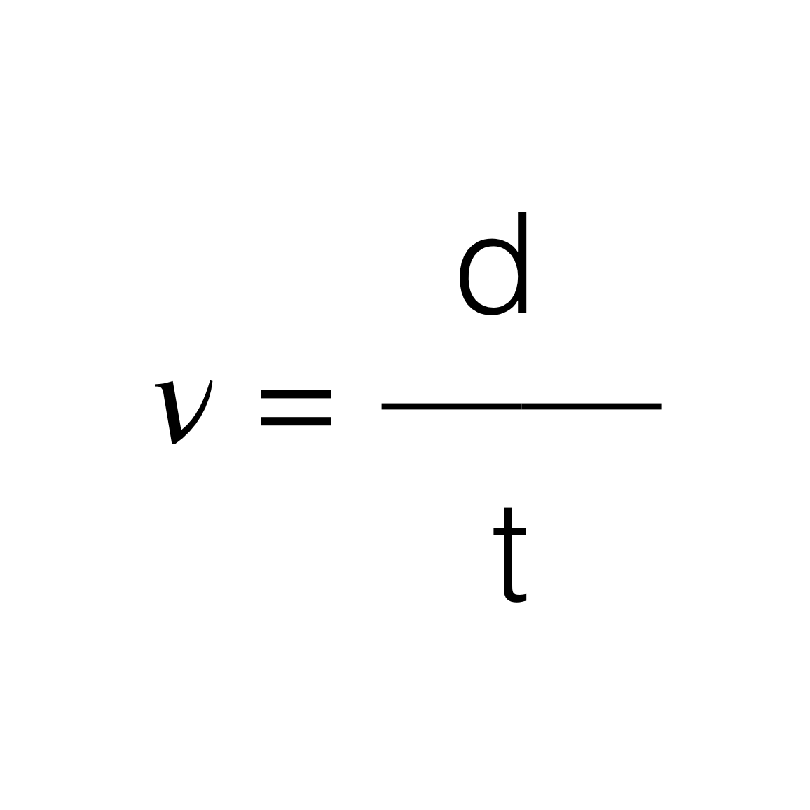

Do you find frequency difficult or confusing? Do you wish there was an easier way to understand and/or remember the equations? Well, in this article, I am going to explain frequency in detail, and show you a way I discovered to help you remember the equation without having to dig into your science book.
Before I get to far ahead of myself, I would like to explain what frequency is.
First of all, frequency is a measurement of how frequently an event repeats itself over time. Imagine it like a swinging pendulum; the pendulum swings back and forth, always traveling the same speed and passing the same point.
Lastly, frequency is expressed as a ratio. It is actually quite similar to how the slope is measured in a graph. In a graph, the slope doesn't express the exact points of the x and y coordinates; instead, it allows you to understand the relationship or ratio between these points. In the same way, frequency allows you to understand the relationship between the position and timing of an object (or event).
When first looking at a frequency graph, It may look confusing. All you see is a squiggly line traveling across the page, and you notice terms like wavelength and amplitude. But what are these terms, and how can they be visualized in real life?
In order to better understand these terms, we will need to complete a quick exercise.
To start out, take your hand in front of you, and wiggle it up and down with short movements consistently. Right now, your hand is expressing a frequency. Now, increase the distance your hand travels all while keeping the same rhythm. Now you have changed the amplitude of your hand. Your hand is now moving faster in order to pass the same spot in the same amount of time. If your hand was a stringed instrument, the sound of the string would be amplified— or louder.
Now, take your hand and wiggle it the same as you did before. Then, without changing the distance your hand travels up and down, move your arm side to side. You should be able to see a curvy line similar to the graph above. Try making longer and shorter sweeping movements to see how the wave changes. What you have demonstrated is the wavelength, or the distance that your hand is traveling. This would be equivalent to pressing your finger on a stringed instrument in order to shorten it, which would cause the instrument to produce a different note.
When it comes to memorizing or understanding the relationship of the frequency equation, it can be confusing. However, if we relate it to other equations we understand, it can can be a lot easier to comprehend.
One such equation is the one for determining velocity.
—James Morton